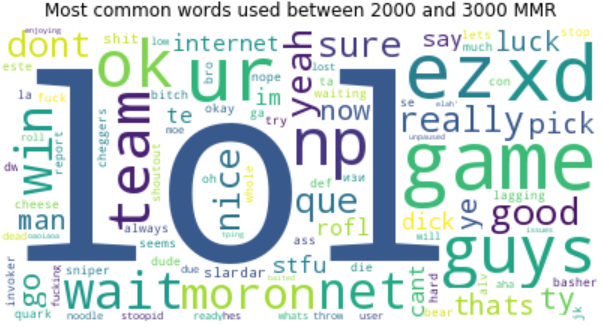
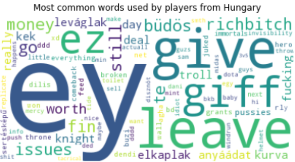

You are what you say
What does your comments say about you?
During a game of dota, every player has the possibility to write messages to each other. We used text processing to find the most used words of different player groups. We divided the players based on the result of the game (whether they were on the winning side or on the losing side). Are they swearing more when they are losing? Are they couraging the others when they are winning? Let's take a look at the most frequently used words in both cases...
As experienced dota 2 players we can easily reflect on these results. In an average game, before a huge teamfight someone always asks whether we should start the initiation or not. This is why 'go' is very popular in both cases. If the fight was successful, we congratulate each other for the perfect execution, timing and item usage by saying 'ty', which is a short version of 'thank you'.
On the other side, most of the time after a lost teamfight we either laugh at our mistakes by typing 'xd' or 'lol' or use excuses like 'lagging', or occasionaly we flame each other.
The next division we did was based on player skills. The game keeps track of different players skills. This is represented with a number called Match Making Rank (MMR) which can be between ~1000 and ~9000, the bigger the better. Usually professional players are above 7000 and casual gamers are below it.
Our hypothesis was that as a player gets better and better the most commonly used words are getting more supportive and the most flaming takes place in lower levels. Let's see if our results corresponded to our expectations or not...

As we can see on the lowest levels people can't even write properly. The typos are frequent and most words do not make sense. No constructive or supporting words are present. (MMR: 1000 - 2000)
Let's merge the next two brackets and analyse them together. 'lol' is often used after mistakes, this refers to the frequently committed mistakes by amateur players. Dota players use 'ez' to annoy the enemy team after conquering them in a fight ('ez' is the short version for 'easy'). This is psychological warfare at its finest! (MMR: 2000 - 4000)
For the next brackets more and more strategic words appear. This clearly indicates the increasing level of skills. Words like 'now', 'wait', 'go', 'ok' or positive feedback for team mates as 'ty'. This bracket introduces the idea of team play. (MMR: 4000 - 6000)
In the last category people extensively rely on team play. The word 'teamspeak' appears which is a famous platform similar to skype mainly used by gamers for in game communication. 'fun' also comes back, this represents that the people in this group enjoy gaming while delivering a high skill level. (MMR: 6000 - 9000)
Now let's see what words represent the different nationalities! We choosed three countries with the biggest dota community and Hungary as our home country, to make the project more personal. The results...


The first wordcloud is the words most frequently used in the United States. And we are glad to scientifically prove that a lot of Russian players play on American servers. This is a widely known phenomenon in the dota community and the main reason behind it, is that Russian players tend to be lower skilled than others. Therefore the servers are mainly filled with low level players, from which a lot of them are trying to escape to the most skilled servers: the American ones. This eventually leads to a flood of Russian players in America.
On the next image we can see that Asian dota is not English based. This culture is so different than any other, that even casters and professional players use to say 'Chinese dota' for their gaming style.
The third chart is from Russia, here we can see that most of the words are using cyrillic characters. To be honest, we do not understand any of it...
The last picture represents our home country. Here we would like to provide some basic cultural information. For example the word 'ey' is the hungarian representation of the word 'ez', we use 'y' instead of 'z' because of the Hungarian keyboard is a 'QUERZ' keyboard and not a 'QUERTY'. Most of the hungarian words are swearing in various style, we think it's not necessary to analyse them now.
All of our results clearly tell a story which is closely related to the group it was based on!